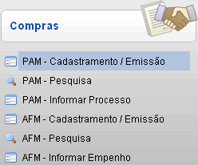
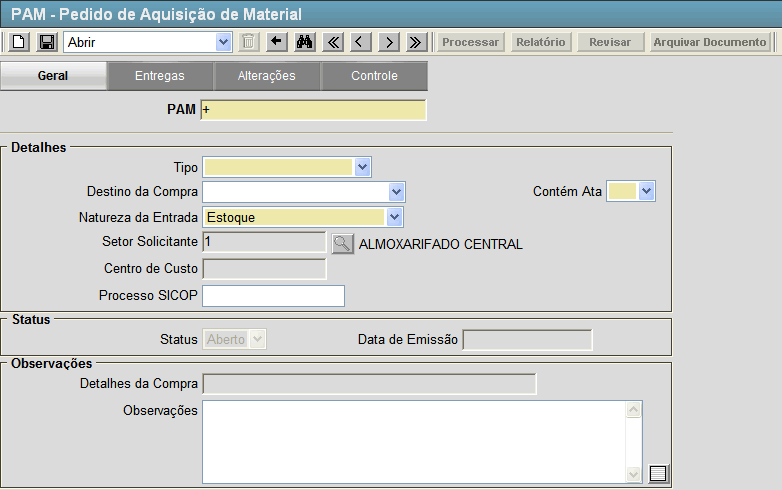
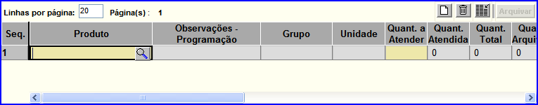
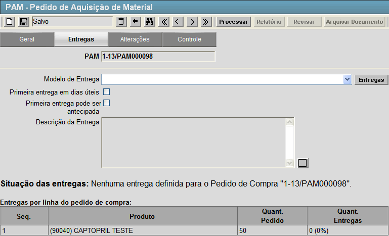
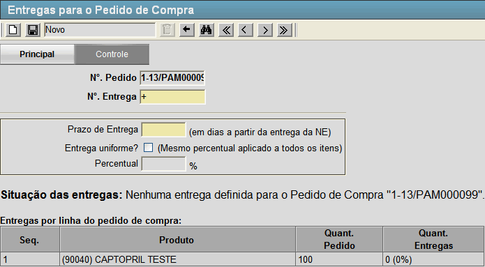
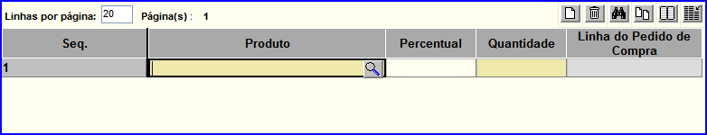
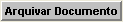
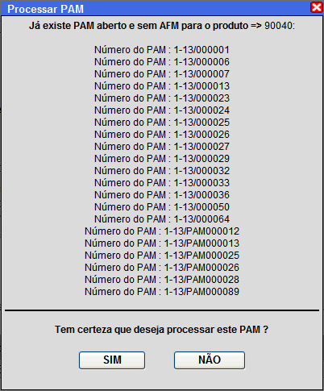

PAM - Cadastramento / Emissão [ Voltar ] Utilize esta
tela para registrar no sistema um Pedido de Aquisição de Material - PAM.
O formulário "PAM - Cadastramento / Emissão"
encontra-se dentro do menu "Compras - Compras".

Ao clicar no formulário, o sistema exibirá a seguinte
tela:

Para cadastrar um PAM, siga os passos
abaixo:
1º
Passo: preencha os campos do formulário. Lembre-se que os campos em amarelo são
obrigatórios.
- PAM. Por padrão, este campo contém o sinal "+". Desta forma, quando o registro é
salvo, é-lhe atribuído o próximo número disponível ao PAM.
- Tipo. Selecione aqui o tipo de pedido de aquisição que será realizado. As opções são: "Emergencial", "Abastecimento Regular", "Ação Judicial" e "Requerimento / Pró-SUS".
- Destino da Compra. Selecione aqui qual o destino da compra. As opções são: "1 - Atenção Básica", "2 - Componente Especializado" e "3 - Atendimento Hospitalar".
- Contém Ata. Selecione aqui se o PAM possui uma Ata associada.
- Natureza da Entrada. Classifique aqui o PAM de acordo com sua armazenagem. As opções são: "Estoque", "Estoque - Doação", "Estoque - Ministério da Saúde", "Estoque - Produção", "Patrimônio", "Uso específico" e "Recebimento Regional".
- Processo SICOP. Indique aqui o número do processo no SICOP que referencia esse PAM.
- Observações. Utilize esse campo para adicionar quaisquer outras informações pertinentes ao PAM.
Após preencher corretamente todos os campos do formulário clique no botão  [Salvar] para armazenar o registro. [Salvar] para armazenar o registro.
2° Passo: preencha na grade as informações dos materiais. Assim que o registro é salvo, aparecerá uma grade para inserção de materiais referentes ao PAM. Conforme figura abaixo. 
Os campos necessitados de preenchimento são:
- Produto. Entre aqui com o código do produto em questão. Clique no botão
 [Pesquisar] para selecioná-lo por meio de uma listagem contendo todos os produtos cadastrados. [Pesquisar] para selecioná-lo por meio de uma listagem contendo todos os produtos cadastrados. - Quant. a Atender. Insira aqui a quantidade de itens do produto a ser requisitado.
Observações: - Os campos referente a Ata somente serão preenchidos se for selecionado previamente no campo Contém Ata como "Sim".
Selecionado, aparecerá uma listagem abaixo da grade de materiais com
todas as Atas em aberto, selecione a Ata referente ao PAM com um clique.
- Utilize as teclas "Tab" ou "Enter" para navegar entre os campos na grade
- Clique no botão
 [Novo] para adicionar novos produtos a grade. [Novo] para adicionar novos produtos a grade.
Após adicionar os produtos clique no botão [Salvar] para armazenar as novas informações.
3° Passo: configure as informações de entrega do PAM. Clique na aba "Entregas" para especificar o cronograma da entrega.

Nesta
tela, você pode selecionar entre modelos de entrega pré-definidos ou
configurar um modelo de entrega. Caso queira selecionar entre os
modelos de entregas pré-definidos as opções são:
- "Conforme solicitação";
- "30% em 10 dias e 7 mensais de 10%";
- "100% em 30 dias";
- "100% em 60 dias";
- "100% em 90 dias";
- "100% em 10 dias";
- "100% em 20 dias";
- "25% em 10 dias e 3 mensais de 25%";
- "40% em 10 dias e 2 mensais de 30%";
- "100% em 5 dias";
- "50% em 10 dias e 50% em 40 dias";
- "20% em 10 dias e 4 mensais de 20%";
- "30% em 10 dias, 2 mensais de 15% e 4 mensais de 10%";
- "30% em 10 dias, 20% em 40 dias e 5 mensais de 10%";
- "100% em 15 dias";
- "25% em 90 dias e 3 mensais de 25%" ; e
- "20% em 90 dias e 4 mensais de 20%".
4º Passo (Opcional): caso queira customizar a forma de entrega, clique no botão  [Entregas]. [Entregas]. O sistema abrirar a tela abaixo: 
Nesta tela, configure os pazos de entrega de cada produto do PAM, conforme sua necessidade. - Digite o número da entrega no campo "N°. da entrega"
e o prazo de dias em que esta deve acontecer (por exemplo: entrega 1,
10 dias após a entrega da nota de empenho; entrega 2, 20 dias após a
entrega da nota de empenho, etc).
- Clique no botão [Salvar]
para salvar a entrega. Assim que a entrega é salva, uma grade para
inclusão do conteúdo da entrega é exibido na parte inferior da tela.

- Informe
os produtos e quantidades que deseja para esta entrega. Se desejar
entregas uniformes, marque a opção "Entrega uniforme?" para que o mesmo
percentual seja aplicado a todos os itens. Em seguida, especifique o
percentual no campo de mesmo nome na grade.
- Clique no botão [Salvar] para concluir esta entrega.
- Para criar outras
entregas que comporão o cronograma, siga novamente os passos de customização de entregas.
Após
personalizar as entregas, clique no botão  [Voltar] para retornar a tela "PAM - Pedido de Aquisição de Material". [Voltar] para retornar a tela "PAM - Pedido de Aquisição de Material".
5° Passo: clique no botão  [Processar] para concluir o PAM.
Assim que o registro é processado os seguintes botões se tornarão
habilitados: [Processar] para concluir o PAM.
Assim que o registro é processado os seguintes botões se tornarão
habilitados:
-
 [Relatório]. Clique neste botão para visualizar e imprimir o relatório "Pedido de Aquisição de Material (PAM)". [Relatório]. Clique neste botão para visualizar e imprimir o relatório "Pedido de Aquisição de Material (PAM)".
-
 [Revisar].
Caso algum dado da ordem necessite de revisão, clique neste botão
para alterá-lo. Após revisar o pedido, é necessário repetir o 5°
passo e processar novamente o PAM. [Revisar].
Caso algum dado da ordem necessite de revisão, clique neste botão
para alterá-lo. Após revisar o pedido, é necessário repetir o 5°
passo e processar novamente o PAM. - [Arquivar Documento]. Clique nesse botão para arquivar o PAM, será necessário indicar o motivo do arquivamento.
Observação:
só é possível revisar ordens que não estejam vinculadas a um registro
de recebimento.
Caso aparece a tela abaixo, favor verificar se já não existe um PAM aberto para os produtos da requisição antes de processá-la.

|